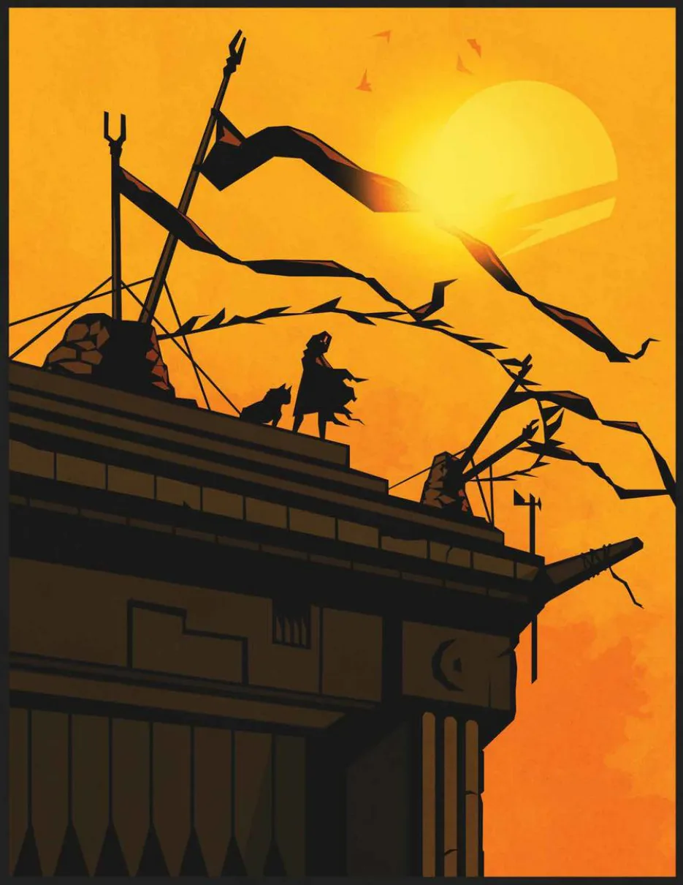

Begegnung
Paladin3/7
Vigilit ×31/5
Stadtwache0/5
+ Gegner
AlleSchwierigkeit 012+Mit Fernkampf
Paladin
Schw. 2Wid. 7
Rüstung 4W6W3Fernkampf
Religion · Die Sonnenbasilika · S. 167
Vigiliten
Schw. 0 (1)Wid. 3 / 5
W6Streuung W3Einweg
Religion · Karmesinrote Wacht · S. 163
Vigiliten-Brandstifter
Schw. 0 (2)Wid. 6+
W6FernkampfGefährlich
Religion · Karmesinrote Wacht · S. 163
Hyänenrudel der Charnel-Geschworenen
Schw. ·Wid. ·
W6
Religion · Neuer Himmel · S. 171
Stadtwache
Schw. 0Wid. 5
Rüstung 2W3W6Brutal
Ordnung · Die Stadtwache · S. 147
Herbst-Paladine
Schw. ·Wid. ·
W8
Snuff Out the Sun · QS S. 22
Schwarze Garde
Schw. ·Wid. ·
W8
Hohe Gesellschaft · Amaranth · S. 109
Paladin
S. 167
- Namen
- Schreitet-über-die-Morgenröte, Hase-der-zum-Jäger-flitzt, Zehntausend-Lieben
- Beschreibung
- Trägt viele Reliquien · Rotes Haar, zurückgebunden · Liest laut aus dem Dritten Buch der Ernte vor
- Schwierigkeit
- Die Paladine gehören zu den besten Kämpfern der ganzen Stadt und sind zudem am besten ausgerüstet. Schwierigkeit 2 durchweg, es sei denn, man kann die Chancen irgendwie ausgleichen
- Widerstand
- 7
- Ausrüstung
- Paladin-Dienstplatte Rüstung 4, Legrand-Militärgewehre W6FernkampfDurchschlagend oder Carog-Schrotflinten W6FernkampfKernschussNachladen und Schlingen W3Schwächend, dazu Sonnenbomben FernkampfStreuung W3Nicht tödlich, die sie vor dem Angriff in Räume schleudern
Religion › Die Sonnenbasilika › Die Paladine → zum Distrikt + Begegnung